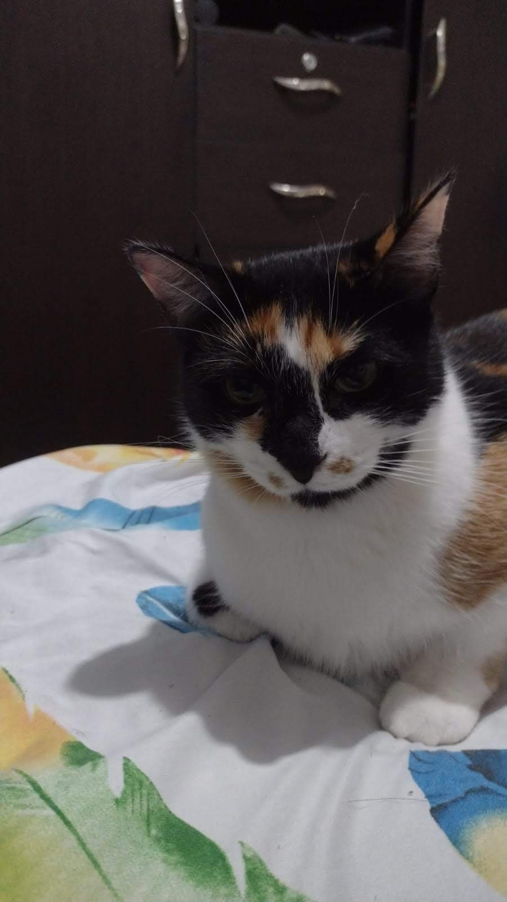

Imagenes de mis mascotas
Click para ver imagenes de mis mascotas.
- Mi Mascotas
- Mi Compañeros
- Mi Salud Mental


Mis Mascotas
Mis mascotas son:
- SISU
- SUSI
- ESTRELLA
 - METEORO
Mascotas
Las mascotas son compañeros leales y amorosos que alegran nuestras vidas. Ya sea un perro, un gato, un pájaro o incluso un pez, las mascotas nos brindan compañía y afecto incondicional. Compartir nuestro hogar con una mascota nos permite experimentar el amor incondicional y la conexión especial que solo los animales pueden ofrecer.

Compañeros
Además de ser compañeros, las mascotas también nos ayudan a mantener un estilo de vida saludable. Pasear a un perro o jugar con un gato activa nuestro cuerpo y nos motiva a ser más activos. Además, cuidar de una mascota nos enseña responsabilidad y nos ayuda a desarrollar una rutina diaria, lo que contribuye a mejorar nuestro bienestar general.

Salud Mental
Las mascotas también tienen un efecto positivo en nuestra salud mental. El simple acto de acariciar a un animal puede reducir el estrés y la ansiedad, y se ha demostrado que tener una mascota ayuda a disminuir la presión arterial y el riesgo de enfermedades cardiovasculares. La presencia de una mascota en el hogar también puede brindar consuelo emocional y apoyo, especialmente en momentos difíciles.
:quality(85)/cloudfront-us-east-1.images.arcpublishing.com/infobae/7HUZJCYUNZHF5NOU6DAXV7YU2Y.jpg)